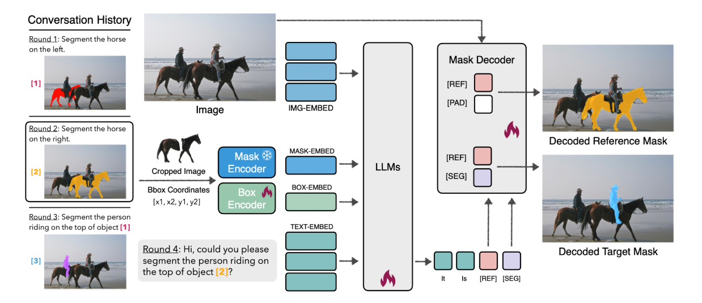
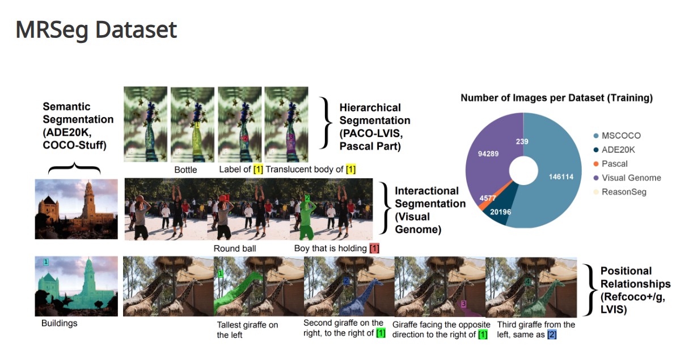

SegLLM: Multi-round Reasoning Segmentation
Making image segmentation conversational by feeding previous mask outputs back into the LLM to enable coherent, multi-turn interaction.
Interactive image segmentation plays an important role in medical imaging, helping doctors precisely annotate structures like tumours, organs, and blood vessels to support diagnosis and surgical planning [1]. In practice, doctors rarely ask just one question and stop. Instead, they work through a series of steps: first locating a tumour, then checking the surrounding vasculature, then isolating a specific organ. This process is naturally multi-round. Research has shown that interactive segmentation tools can reduce annotation workload by three to four times compared to traditional manual annotation [2]. The problem is that existing tools treat each query independently. Every time a user asks a new question, they have to re-establish the full context from scratch. This is especially frustrating in medical settings, where anatomical structures are closely related and the result of one segmentation step is almost always the starting point for the next. Bridging this gap, giving models the ability to remember previous interactions, is exactly what motivates the work we discuss in this post.
Image segmentation is the task of partitioning a digital image into multiple regions by assigning a label to every pixel, such that pixels with the same label share certain visual characteristics [3]. It is one of the most fundamental problems in computer vision, underpinning applications from medical imaging and autonomous driving to scene understanding and interactive editing. Put simply: instead of just saying "there is a dog somewhere in this photo" (classification), or drawing a box around it (detection), segmentation traces the dog's exact outline, pixel by pixel.
Not all segmentation tasks ask the same question, though. It helps to separate three flavours of the problem, since later sections build directly on this distinction:
Before deep learning, segmentation relied on hand-designed rules and simple statistics over pixel values, rather than features learned from data. Three families of techniques dominated this era:
These methods are fast, require no training data, and are easy to reason about. However, they all rely on hand-crafted assumptions about what makes pixels belong together, such as a fixed brightness cutoff, a fixed notion of "sharp change", or a fixed similarity measure. Real-world images often break these assumptions: shadows and uneven lighting confuse thresholding, textured backgrounds create false edges, and objects that share a similar colour to their surroundings get grouped together incorrectly by clustering. None of these methods have any real concept of an "object"; they only look at pixel statistics, not semantics.
If this kind of classical, hand-designed image processing interests you and you would like to go deeper, our university offers a dedicated Imaging Science course at Uni Stuttgart in the summer semester. It is well worth considering as an elective if this section caught your interest.
Deep learning changed this by letting the model learn what a "boundary" or "region" looks like directly from data, rather than relying on hand-crafted rules. The field's evolution can be seen as a series of steps, each solving a limitation of the one before it:
By the time we reach SAM, most modern deep-learning segmentation models, especially the ones that accept a text query rather than just a click or a box, converge on a shared, three-part architecture. It is worth sketching this out once, since SegLLM (discussed in Section 2) is itself a variation on exactly this pattern:
Figure 0: The typical modern segmentation architecture. Separate encoders process the image and text, and their outputs are fused inside a mask decoder that predicts the final mask.
Reasoning in Large Language Models refers to the ability to solve complex problems through multi-step inference, drawing on learned knowledge to chain intermediate conclusions towards a final answer [12]. Unlike simple pattern matching, LLM reasoning involves understanding context, resolving ambiguity, and following implicit logical structure. This capability has been demonstrated across diverse tasks including mathematical problem solving, commonsense inference, and question answering [13].
It helps to make this concrete before moving on, since the distinction between "reasoning segmentation" and ordinary segmentation is easy to lose sight of once the architecture gets more complex. The key difference is whether the query names the target object directly, or only describes it indirectly.
This is exactly the gap identified in Section 1.3: a model like SAM can segment "the orange" perfectly well once it is given that label, but it has no way of resolving "the food that is high in Vitamin C" into a label on its own, and it has no mechanism at all for reasoning about relationships between objects, as the third example requires. That resolving step, working out which object a description refers to before any segmentation happens, is what reasoning segmentation adds.
The two reasoning queries above are instances of a task called reasoning segmentation, in contrast to the label-based query. More formally: given an implicit, complex natural language query, the model must reason about image content to understand relationships, context, and intent before producing a segmentation mask [14]. As the examples show, this goes well beyond simply matching a text label to a visual region. Models such as LLaVA [15] showed that aligning visual encoders with LLMs through instruction tuning enables rich cross-modal reasoning. Building on this, LISA [14] operationalised reasoning segmentation by introducing a learned [SEG] token as a clean interface between language-level reasoning and pixel-level mask output, without any handcrafted heuristics for when or what to segment.
[SEG] Token?[SEG] is a single new token added to the LLM's vocabulary. Its job is not to carry meaning on its own; it simply signals to the rest of the system that a segmentation mask needs to be produced here, telling the downstream mask decoder when to act. What matters more than the token itself is its hidden state: the vector the LLM computes internally at the position of that token, taken from the model's last hidden layer. Because the LLM has just reasoned through the entire query and image together, this vector ends up containing exactly the semantic information the mask decoder needs, including what the task is, which object is being referred to, and how that object relates to others in the scene. Since this hidden state is what actually gets passed forward and compared against the image features, it is often referred to as the query vector.
This changes the three-part architecture from Section 1.3 by inserting a reasoning step in the middle. The encoders no longer feed the mask decoder directly. Instead, their outputs go into an LLM that reasons over both, and only the LLM's output (the [SEG] token's hidden state) is passed on to the mask decoder:
Figure 0b: Reasoning segmentation architecture. The LLM sits between the encoders and the mask decoder, reasoning over both modalities before emitting the [SEG] token that drives mask prediction.
Despite these advances, current LLM-based segmentation models are limited to single-turn queries. Once a mask is generated, the model has no memory of it, and users cannot follow up with queries that reference previous segmentation outputs.
Looking back at the architecture in Figure 0b makes this limitation concrete. Information only flows in one direction: the image and text go into the LLM, the LLM emits a [SEG] token, and the mask decoder turns that into a mask. Once the mask decoder has produced its output, the pipeline is finished. There is no path for that mask, or any other trace of what just happened, to flow back into the LLM. This means that if a user asks a follow-up question that depends on the previous result, the LLM has no way to access what it just segmented, and it has no record that a previous round of segmentation even took place. To support multi-round reasoning, or to let the model reason about an object based on where a previously segmented object was, this feedback path would have to exist. In the architecture as it stands, it simply does not.
This limitation breaks the natural flow of interactive segmentation, which is increasingly important in real-world annotation, editing, and scene understanding pipelines.
The second query is beyond what most existing models can handle, since it depends entirely on the result of the first.
This might seem like an easy gap to close. When we use a chatbot such as ChatGPT, Claude, or Gemini in a browser, we can have a long, multi-turn conversation, and the model clearly remembers what was said earlier in the same chat. Since reasoning segmentation is built on exactly this kind of LLM, it seems reasonable to expect that it should be able to do the same.
Section 1.5 pinpointed exactly where the single-round architecture breaks down: once the mask decoder produces an output, that information has nowhere to go, since nothing connects it back to the LLM. SegLLM's core contribution is to add that missing connection. After each round, the mask the decoder has just produced is encoded and fed back into the LLM as part of the input for the next round, so the LLM entering round 2 has direct access to what was segmented in round 1. This turns the one-way pipeline from Figure 0b into a loop.
Figure 0c: Simplified architecture diagram. The Mask Encoder sits alongside the Image and Text Encoders and feeds the previous round's masks and information back into the LLM, closing the loop that Figure 0b was missing. (Exact encoding details are covered in Section 2.2.)
SegLLM also makes a second, related change: conversation context is fed into the mask decoder itself, not just into the LLM. We leave the details of this second change for Section 2.3, once the relevant tokens have been introduced; for now, the feedback path from mask decoder back to LLM is the key idea to take away.
In the Live Demo below, you can see that we are able to continue querying based on the segmentation result from the previous round of interaction, and perform further segmentation.

Figure 1: Interactive Multi-Round Segmentation Demo.
The image is first processed by the image encoder (CLIP or DINOv2), which transforms it into patch representations and converts them into embeddings.
The text prompt does not go through a separate text encoder. As noted in Section 1.4, the LLM here is itself a multimodal VLM (LLaVA), so the text query is simply tokenized and embedded using the LLM's own embedding layer, the same way any text input to an LLM would be.
On their own, the image encoder's visual embeddings live in a different representation space from the LLM's text embeddings, with different dimensions and statistics, so the LLM cannot directly treat them as part of its input sequence. A projection layer solves this by mapping the visual embeddings into the same space as the LLM's text embeddings, so that image and text can be processed jointly, as tokens in one shared sequence.
The LLM then processes this combined sequence and generates an output, emitting a special token [SEG] whenever segmentation output is required, serving as a learned interface to the mask decoder. Deciding when to emit [SEG] is not a separate, rule-based step: it is simply the LLM predicting its next token as usual, trained to place [SEG] at the right point in the sequence. We return to how this training works in Section 3.2.
Besides the image and text, the LLM also needs to know what has already been segmented in earlier rounds. This is the job of the Mask Encoder: it takes the mask produced in a previous round and encodes it into embeddings that are fed back into the LLM alongside the image and text embeddings, closing the loop shown earlier in Figure 0c. We describe exactly how this encoding works in Section 2.2.
To make use of this history, the LLM uses a second special token alongside [SEG], called [REF]. Where [SEG] marks the object to be segmented in the current round, [REF] marks an object segmented in an earlier round that the current query refers back to. Having two separate tokens lets the LLM distinguish "the new object I need to segment now" from "the earlier object this query is relating to", which is what makes cross-round references possible. We describe how [REF] and [SEG] are combined into decoder queries in Section 2.3.

Figure 2: SegLLM architecture overview. Previous mask outputs are fed back into the LLM via Mask Encoder and Box Encoder, enabling multi-round reasoning segmentation.
To summarise which concrete model backs each component just described:
The Mask Encoding Module is the component introduced in Section 2.1: it turns each mask the decoder has already produced into something the LLM can read in the next round. Its input is a single mask, together with the image it came from; its output is two compact embeddings, rather than a whole new set of image patch tokens. This matters because re-encoding the full image for every previous mask would make the input sequence grow very quickly across rounds, whereas one or two extra tokens per mask does not.
The first of the two embeddings, the mask embedding, captures what the masked object looks like. To build it, every pixel outside the mask is set to black, and the image is cropped to the mask's bounding box, leaving an object-centric image that isolates just the segmented object. This cropped image is passed through a CLIP-ViT encoder to obtain a raw embedding, which is then projected through an MLP layer so its dimension matches the LLM's input embeddings.
Figure 2a: Mask embedding generation pipeline.
The second embedding, the bounding box embedding, captures where the object was located in the original image. A segmentation mask is just a set of foreground pixels, so its bounding box does not need to be predicted separately: it is computed directly from the mask, by taking the minimum and maximum x and y coordinates of the mask's foreground region. This gives the box in its plain coordinate form, (x1, y1, x2, y2), where (x1, y1) is the top-left corner and (x2, y2) is the bottom-right corner. These four numbers are then turned into a positional embedding of the same dimension as the LLM's input. No separate encoder network is needed for this step.
Figure 2b: Bounding box embedding generation pipeline.
For every mask, these two embeddings, mask embedding first and then bounding box embedding, are fed into the LLM's input sequence one after another. Across multiple rounds, this gives the LLM a compact but complete record of everything segmented so far: what each object looked like, and where it was.
The name refers to what the mask decoder is aware of. An ordinary mask decoder, like the one in SAM or LISA, only ever sees the current query and the current image features; it has no access to what was segmented earlier in the conversation. Here, the decoder is made aware of that history directly, so it can take previous segmentation results into account when producing a new mask, rather than treating every round as a fresh, isolated request.
The Mask-Aware Decoding Module is the second core change SegLLM introduces, first mentioned in Section 2.1. Its job is to let the mask decoder use the conversation history directly, rather than relying only on the current LLM output. Its input is the hidden states of two special tokens the LLM emits, [REF] and [SEG]; its output is two separate masks, one that grounds a previously segmented object and one that is the actual answer to the current query.
Consider the query "segment the head of the person we identified earlier." Here, [REF] carries information about the person identified earlier, the reference object the query is relating to. [SEG] carries information about the actual target, the head. Without [REF], the decoder would have no way of knowing which person's head is meant.
To make use of both tokens, the decoder does not run once: it forms two separate queries, each handling one part of the task. The first query combines [REF] with a padding token, [PAD], and is matched only against the previously segmented object. This grounds [REF] to a specific region of the image, without asking the decoder to segment anything new.
Figure 2c: The first query, grounding [REF] to the previously segmented object.
The second query combines [REF] with [SEG], and is matched against the actual target: the object the current round should segment. Because [REF] is still present in this second query, the decoder can use the grounded reference location together with the new segmentation signal to resolve exactly what "the head" refers to.
Figure 2d: The second query, resolving [SEG] in light of the grounded [REF].
In the first round, or whenever a query does not depend on any earlier result, the LLM simply does not emit [REF], the same way it learns when to emit [SEG] in the first place. In that case the decoder falls back to a single [SEG]-only query, exactly like LISA's single-round setup. This is also why SegLLM matches or exceeds LISA on standard single-round benchmarks such as RefCOCO: when there is nothing to refer back to, it behaves just like a single-round model.
The training data consists of multi-round conversational segmentation queries built on top of several existing public datasets, including RefCOCO, Visual Genome, PACO-LVIS, and COCO-Stuff. The dataset covers a diverse set of object relationships, including positional, hierarchical, and interactional relationships, with conversation templates refined using GPT-4 to ensure natural language fluency.

Figure 3: Dataset overview showing multi-round conversational segmentation examples across different object relationship types.
Before getting into the details, it is worth stating upfront exactly what training involves here: only the LLM and the projection layer are trained. Every other component, the image encoder, the mask encoder, and the mask decoder, uses a pre-trained model with its parameters kept completely frozen, as summarised in the Model Components table in Section 2.1. This is why the training process described below is entirely about teaching the LLM to reason correctly and to emit the right tokens at the right time, rather than about learning to see or to draw masks from scratch.
Before looking at how SegLLM trains its two decoder queries, it helps to see how the simpler, single-token case works in LISA, since SegLLM's training builds directly on top of it. LISA trains the LLM on templated question-answer pairs where [SEG] is simply part of the target sentence, for example:
ASSISTANT: It is [SEG].
The LISA paper does not explain why it settled on this specific template, but we suspect it comes down to engineering convenience. A short, highly regular template like this guarantees that [SEG] always appears in a predictable position in the output, which makes both the training data and the extraction of its hidden state much simpler to implement.
There is also a semantic argument for it: if the LLM outputs "it is" followed by a single token, that token is, grammatically, whatever "it" refers to, which is exactly the content we want the query vector to carry.
Allowing free-form responses, or a more diverse set of templates, would likely require extra processing to locate [SEG] and to keep its meaning well defined, so we read this as a deliberate simplification, a trick, rather than a principled design choice. This reading lines up with how the field later reacted to it: LISA++ [17] explicitly criticises this template as too rigid and unnatural, arguing it cannot adapt to the diversity of responses needed in real applications.
Because [SEG] is treated as an ordinary word in the answer, learning to place it correctly requires nothing beyond the standard autoregressive cross-entropy loss already used to train any LLM: the model is simply taught to predict the correct next word at every position, and one of those words happens to be [SEG]. No separate classifier or rule decides when to segment; the language modelling objective already covers it, exactly as we noted in Section 2.1.
Once the model has learned to emit [SEG], the next question is how that single token turns into an actual mask. This is the "embedding-as-mask" idea introduced in Section 1.4: the LLM's last hidden layer computes a vector at the position of the [SEG] token, and that vector, not the word itself, is what carries the segmentation request forward.
Figure 2e: How a single [SEG] token is turned into a mask (LISA's "embedding-as-mask" mechanism).
SegLLM is trained end-to-end on the dataset described in Section 3.1, using this same mechanism for both [REF] and [SEG]. Compared with single-round models like LISA, which need exactly one mask per training example, SegLLM has to handle multiple masks within a single multi-round conversation, which is far more expensive to train on. To keep this computationally feasible, the authors replace SAM's large ViT-H mask decoder with a smaller HIPIE-R50 decoder. This mask decoder, along with the CLIP image encoder, is kept frozen throughout training; only the LLM and the projection layer connecting it to the visual encoder are fine-tuned.
One more training detail worth knowing: at training time, the ground-truth mask and box embeddings are inserted directly after each [SEG] token, rather than the model's own predictions. This is called teacher forcing, and it is standard practice for training sequence models: it stops small early mistakes from throwing off everything that follows, so the model always learns from a clean, correct history. At inference time, no ground truth is available, so the model instead feeds its own previous outputs back in, exactly as shown in Figure 0c.
The training follows a two-objective setup. The language modelling loss is the same autoregressive cross-entropy loss just described for [SEG], extended to also cover [REF]. The segmentation loss is where SegLLM's two-query design from Section 2.3 becomes a concrete formula:
where Lseg = Lce + λ·LDICE (λ = 1)
Two things about this formula are worth unpacking. First, notice it is a sum of two separate terms, one for the reference mask Mref and one for the target mask Mtgt. This is exactly the design choice from Section 2.3 written out as maths: grounding the reference object is never left as a side effect of getting the target right, it has its own loss term and is supervised directly.
Second, each of those two terms is itself a combination of cross-entropy (Lce) and DICE loss (LDICE), a standard pairing in segmentation, since the two catch different kinds of mistakes: one is stable but easily fooled by class imbalance, the other is robust to imbalance but noisier on its own. Combining them gives the model both a stable, pixel-level gradient and a signal that keeps it focused on the actual object.
Cross-entropy measures how far a predicted probability is from the correct answer, and it is one of the most common loss functions in machine learning, used everywhere from image classification to next-token prediction in LLMs. If the model assigns high probability to the correct class, the loss is small; if it assigns low probability, the loss is large, and it grows sharply as the prediction gets more confidently wrong.
In segmentation, this same idea is applied per pixel: each pixel is a small classification problem, "is this pixel part of the object or not". This is also the exact same loss used for language modelling, just applied to predicting the next word instead of a pixel's class, which is why the same term shows up both in Lseg here and in the language modelling loss described above.
DICE loss is built from the DICE coefficient, a measure of overlap between two regions that behaves similarly to IoU: it is highest when the predicted mask and the ground-truth mask line up perfectly, and lowest when they do not overlap at all. Because it looks at the two regions as a whole rather than judging each pixel independently, it does not care how many background pixels surround the object, only how well the foreground regions match.
This makes it far less sensitive to class imbalance than cross-entropy, and is why the two are usually paired together: cross-entropy for stable, pixel-level gradients, DICE for staying focused on the object's actual shape.
The gains on single-round benchmarks are particularly notable. SegLLM does not trade off single-turn performance to support multi-turn interaction; it improves both simultaneously.
SegLLM is evaluated across three types of tasks, each with its own primary metric. The primary baseline for all comparisons is LISA, the previous state-of-the-art single-round reasoning segmentation model.
| Task | Metric | Description |
|---|---|---|
| Referring Expression Segmentation (RES) | cIoU |
Cumulative Intersection over Union, measuring the ratio of intersection to union of predicted and ground truth masks accumulated across all test samples. |
| Referring Expression Comprehension (REC) | Acc@0.5 |
Percentage of predictions where the predicted bounding box has an IoU of at least 0.5 with the ground truth box. |
| Multi-round Segmentation (MRSeg) | cIoU per round |
cIoU reported per conversational round, evaluating how well the model maintains segmentation accuracy as the number of rounds and relational complexity increases. |
The MRSeg benchmark covers four query types of increasing complexity: referring queries, hierarchical queries, interactional queries, and relational queries. As the rounds progress, the complexity of interaction and memory retention increases, leading to a natural decline in cIoU for all models. SegLLM consistently outperforms LISA across all rounds, with the performance gap widening in later rounds where cross-round reasoning matters most.
The ablation study isolates the contribution of each of SegLLM's two core modules. The results confirm that both components are necessary for strong multi-round performance.
| Configuration | Impact | Finding |
|---|---|---|
| Full SegLLM | Baseline | Best performance across all multi-round and single-round benchmarks. |
| Without Mask Encoding Module | Large drop | The LLM no longer receives any information about previously generated masks, effectively reducing the model to a single-round system. Multi-round performance degrades significantly. |
| Without [REF][PAD] query | Moderate drop | The decoder loses its ability to ground the reference object. The model can still generate masks but struggles with queries that depend on spatial or hierarchical relationships to prior outputs. |
| Diverse query templates (RefCOCO) | +9.6% | When tested with rephrased query variants rather than fixed expressions, SegLLM outperforms LISA by 9.6%, suggesting that multi-round training on varied conversational data improves generalisation to different query phrasings. |
SegLLM does a great job at bringing image segmentation into a multi-round conversation setting, beating existing methods by a large margin while also achieving better results on single-round tasks. The feedback architecture generalises well across both settings.
We find SegLLM to be a genuinely interesting piece of work. It solves a real and previously underexplored limitation: the inability to follow up on previously segmented objects, which significantly raises the ceiling for interactive segmentation.
[REF] token mechanism is built up sequentially with no global attention over all historical rounds. For example, asking "segment the person" first and then "segment the bag she is holding" may give a different result than asking about the bag before establishing the person as a reference. Drawing on NLP evaluation practice, where reversed options or paraphrased queries are standard robustness tests, a similar approach should be applied here. Testing SegLLM with reordered conversation histories would give a clearer picture of whether the model truly understands relationships or is simply pattern-matching the order of prompts.
- Nature Index. Interactive Image Segmentation in Medical Applications. Nature Research Intelligence. Available at: nature.com/nature-index.
- Shaeri, et al. (2025). Explainable Human-in-the-Loop Segmentation via Critic Feedback Signals. arXiv:2510.09945.
- Minaee, S., Boykov, Y., Porikli, F., Plaza, A., Kehtarnavaz, N., & Terzopoulos, D. (2021). Image Segmentation Using Deep Learning: A Survey. IEEE Transactions on Pattern Analysis and Machine Intelligence. arXiv:2001.05566.
- Otsu, N. (1979). A Threshold Selection Method from Gray-Level Histograms. IEEE Transactions on Systems, Man, and Cybernetics, 9(1), 62–66.
- Canny, J. (1986). A Computational Approach to Edge Detection. IEEE Transactions on Pattern Analysis and Machine Intelligence, 8(6), 679–698.
- Vincent, L., & Soille, P. (1991). Watersheds in Digital Spaces: An Efficient Algorithm Based on Immersion Simulations. IEEE Transactions on Pattern Analysis and Machine Intelligence, 13(6), 583–598.
- Harris, C., & Stephens, M. (1988). A Combined Corner and Edge Detector. Proceedings of the Alvey Vision Conference, 147–151.
- Long, J., Shelhamer, E., & Darrell, T. (2015). Fully Convolutional Networks for Semantic Segmentation. CVPR 2015.
- He, K., Gkioxari, G., Dollár, P., & Girshick, R. (2017). Mask R-CNN. ICCV 2017.
- Cheng, B., Misra, I., Schwing, A. G., Kirillov, A., & Girdhar, R. (2022). Masked-Attention Mask Transformer for Universal Image Segmentation. CVPR 2022.
- Kirillov, A., et al. (2023). Segment Anything. ICCV 2023. arXiv:2304.02643.
- Wei, J., et al. (2022). Chain-of-Thought Prompting Elicits Reasoning in Large Language Models. NeurIPS 2022. arXiv:2201.11903.
- Brown, T., et al. (2020). Language Models are Few-Shot Learners (GPT-3). NeurIPS 2020. arXiv:2005.14165.
- Lai, X., Tian, Z., Chen, Y., Li, Y., Yuan, Y., Liu, S., & Jia, J. (2023). LISA: Reasoning Segmentation via Large Language Model. CVPR 2024. arXiv:2308.00692.
- Liu, H., Li, C., Wu, Q., & Lee, Y. J. (2023). Visual Instruction Tuning (LLaVA). NeurIPS 2023. arXiv:2304.08485.
- Radford, A., Kim, J. W., Hallacy, C., Ramesh, A., Goh, G., Agarwal, S., et al. (2021). Learning Transferable Visual Models From Natural Language Supervision (CLIP). ICML 2021. arXiv:2103.00020.
- Yang, S., Qu, T., Lai, X., Tian, Z., Peng, B., Liu, S., & Jia, J. (2023). LISA++: An Improved Baseline for Reasoning Segmentation with Large Language Model. arXiv:2312.17240.